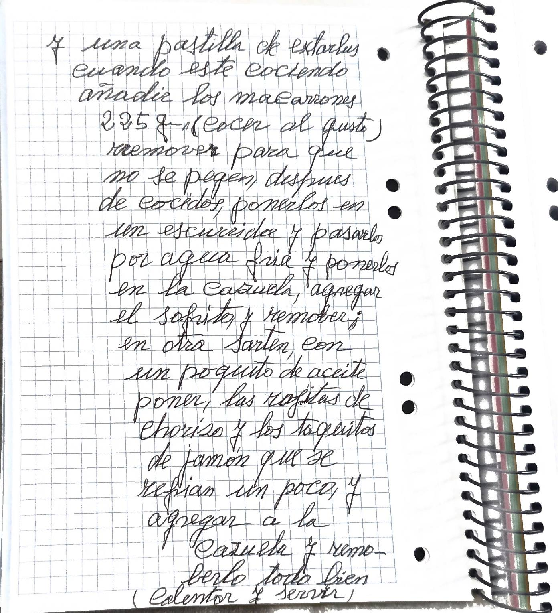

Macarrones con chorizo y carne picada

Versión editada para cocinar. Lo que ella escribió, palabra por palabra, está en «Cuaderno».
Ingredientes
Preparación
- Poner la sartén con el aceite. Picar la cebolla y el ajo y dejar que se poche.
- Agregar la carne picada y rehogar bien. Agregar el tomate y dejarlo en la sartén.
- Poner una cazuela con 1 l de agua y una pastilla de Starlux. Cuando esté cociendo, añadir los macarrones (cocer al gusto) y remover para que no se peguen.
- Después de cocidos, ponerlos en un escurridor, pasarlos por agua fría y ponerlos en la cazuela. Agregar el sofrito y remover.
- En otra sartén, con un poquito de aceite, poner las rajitas de chorizo y los taquitos de jamón, que se refrían un poco.
- Agregarlo a la cazuela y removerlo todo bien. Calentar y servir.
Avisos y dudas
- La cebolla tiene la primera cifra corregida; leo 90 g.
- Los macarrones (225 g), el agua y el Starlux salen en los pasos, no en la lista.
- No menciona la sal.
Tal como lo escribió

Transcripción fiel, con su ortografía. Lo que va entre corchetes son aclaraciones de la transcripción.
Macarrones con chorizo y carne picada (4 perso.)
carne picada 300 gr. cebolla POR CONFIRMAR: 90; la primera cifra está escrita encima de otra gr. ajos 1 aceite unos 25 ml. tomate un tarro de 300 gr. mas, o menos, chorizo 90 gr., taquitos de jamón 70 gr.
(cocinar)
poner la sarten con la aceite picar la cebolla y el ajo, dejar que se poche, y agregar la carne picada reogar bien y agregar el tomate, y dejarlo en la sarten. poner una casuela con un 1l de agua y una pastilla de extarlus cuando este cociendo añadir los macarrones 225 gr. (cocer al gusto) remover para que no se pegen, despues de cocidos, ponerlos en un escurridor y pasarlos por agua fria y ponerlos en la cazuela, agregar el sofrito, y remover; en otra Sarten, con un poquito de aceite poner, las rajitas de chorizo y los taquitos de jamón que se refrian un poco, y agregar a la cazuela y remoberlo todo bien (calentar y servir)
En la cocina
Esta receta todavía no tiene fotos.